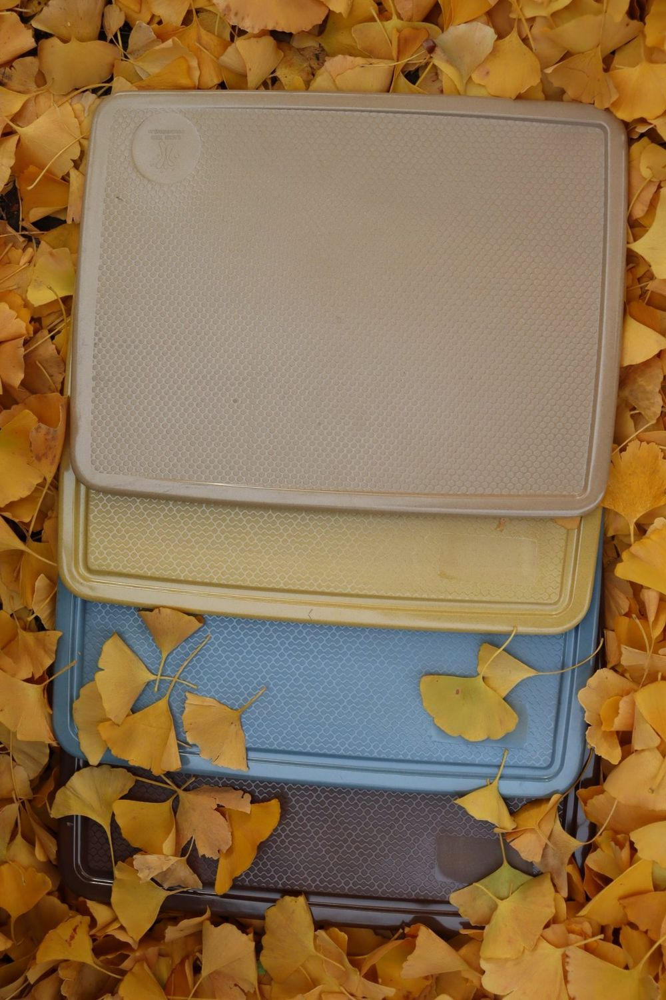
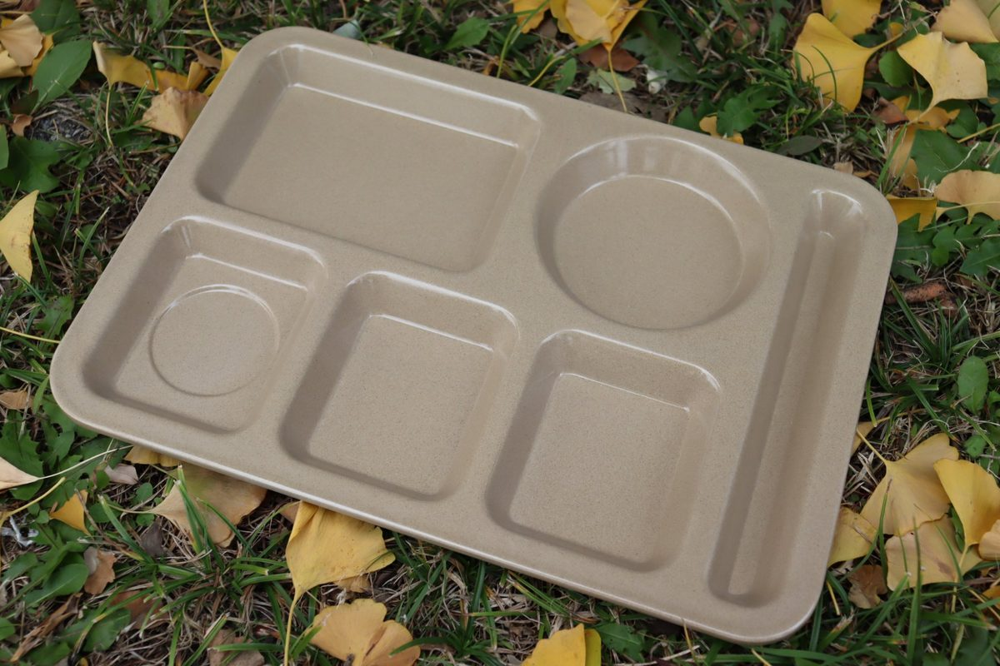
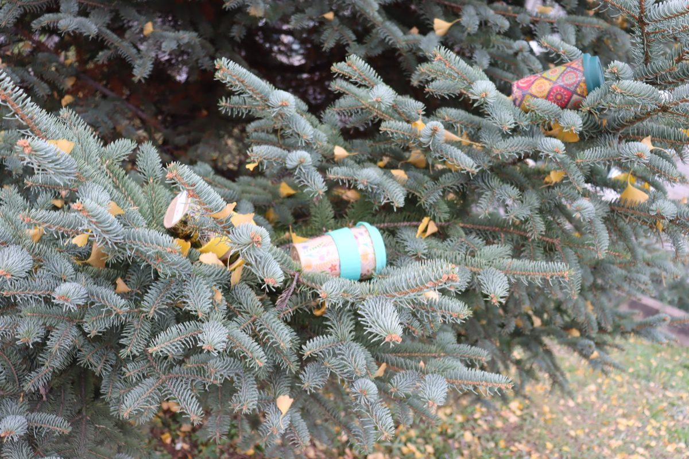
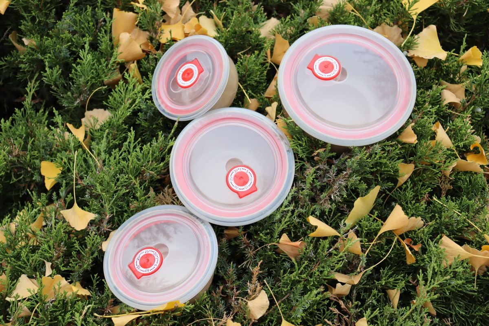

Selling Rice Husk Tableware in the US Home Channel: Retail Tiers, Private Label and Amazon
Most of what is written about eco dinnerware is aimed at restaurants. But in the United States, the volume — and the repeat orders — sit in the home channel: the aisle where a shopper picks up a four-pack of plates for a rental kitchen, a camper, a college dorm, or a family trying to cut plastic out of the cupboard. That channel has its own logic. It buys in sets rather than cases, it judges a product on the shelf and in a photo rather than in a spec sheet, and it is far more sensitive to packaging, barcodes and returns than a foodservice distributor will ever be. This is a working guide to how rice husk tableware actually travels through that channel, written for importers, brand owners and Amazon sellers rather than for restaurants.

Four colourways, one mold. Colour assortment is what a retail buyer actually sees first — and what has to stay identical on every reorder.
Why the Home Channel Behaves Differently
The first thing an importer notices is that the unit of sale changes. A restaurant buys 500 compartment trays and cares about stack height, wash cycles and case cube. A home channel buyer buys a set of four, cares about how it photographs, and thinks in terms of shelf turns per square foot. The same material can serve both, but almost nothing else about the two conversations overlaps.
The second difference is that the home channel sells an outcome, not a specification. A shopper standing in an aisle is not comparing gram weights; they are deciding whether this plate looks like something they want in their kitchen, and whether the story on the label is credible enough to justify paying more than the melamine set next to it. That means the product has to be designed for the shelf from the beginning: color, finish, packing format, the front-of-pack claim set, and the back copy that explains what rice husk actually is in one short paragraph.
The third difference is that the home channel judges a supplier on operational reliability far more than on romance. Late shipments to a retail DC can trigger chargebacks that wipe out the margin on the whole order. A supplier who can hold a delivery window and keep the packaging identical across reorders is worth more than one with a nicer story and an unpredictable factory schedule.
The Tiers You Will Actually Encounter

A compartment tray is a set in itself — the configuration, not the piece, is what a home-channel buyer is pricing.
It helps to separate the channel into tiers, because each one buys differently and expects a different level of hand-holding from the factory.
National and regional mass retailers buy through buying offices and expect a full vendor setup: EDI capability, a UPC for every sellable unit, case pack and pallet configuration, a compliance manual, insurance certificates, and often a third-party factory audit before the first purchase order. Volumes are large and the entry cost is high. For a supplier new to the channel, this tier is usually reached through an existing vendor rather than directly.
Grocery and natural-channel chains sit in the middle. They still want UPCs and clean packaging but are more willing to take a chance on a new material, particularly in the natural and sustainability sets, and they respond well to a credible environmental story that does not overstate itself. This is often the most realistic first landing spot for a rice husk line in the US.
Independent housewares stores, gift shops and garden centres buy in small quantities, frequently through distributors, and care most about presentation, packaging quality and local story. Margins are healthier, order sizes are tiny, and the relationship is personal. A boutique retailer that sells out of a four-pack in six weeks will come back for the same thing — and will notice immediately if the second shipment looks different from the first.
Online-only sellers — Amazon, Etsy, Shopify brands and the aggregators behind them — are now the largest single slice of this channel for plant fiber dinnerware. The economics, and the risks, are distinctive enough to deserve their own section below.
What Buyers Ask For Before They Will Place an Order
Across every tier, a handful of items come up in almost the first email. Having them ready turns a two-week back-and-forth into a single reply.
The home-channel starter pack
- A set configuration sheet — how many pieces per retail set, dimensions, weight per piece, and net/gross weight per set.
- Case pack and cube — sets per carton, cartons per pallet, pallet height and total shipment cube for a realistic order quantity.
- Barcode readiness — whether you can print a buyer-supplied UPC on the inner pack and a GTIN on the carton, and where the barcode sits.
- Packaging artwork template — dielines for a color box, a sleeve or a hang tag, with the print method and minimum order for each.
- Test reports — food-contact documentation for the destination market, available as reports on request.
- Color and finish options — a Pantone match on a sample, with realistic lead time for a custom shade.
- Sampling timeline — how long a pre-production sample takes, and what it costs if anything.
A note on the last item: color is where most first orders lose time. Retail buyers pick colors against a planogram, and a shade that looks right in a photo under warm light can look muddy under store lighting. Sending a physical color chip or a molded sample in the buyer's intended shade is worth the courier cost, because it removes the single most common reason a retail launch slips a quarter.
Private Label: Where the Real Margin Sits

Printed decoration is the fastest route from commodity to branded SKU — and the first thing a buyer asks to see a sample of.
Most of the interesting money in this channel is not in supplying a generic product under someone else's brand — it is in private label. A retailer or a brand owner puts their name on the pack, and suddenly the conversation moves from price per piece to brand positioning, consistency across replenishment, and whether the factory can keep the exact same color and finish for years.
Three things determine whether a private-label program survives its second year. The first is color lock: the recipe for a shade has to be written down and repeatable, not eyeballed batch by batch. The second is tooling ownership: if a custom mold was cut for the program, the buyer needs to know who owns it and what happens if the relationship ends. The third is packaging consistency: the print file, the material of the box, the barcode placement and even the insert should not drift between runs, because the retailer's planogram and their returns desk both depend on the pack being identical every time.
For a buyer evaluating a factory, the practical question to ask is not "can you do private label" — nearly every factory says yes — but "show me the last two replenishments of a program you have run for three years, and tell me what changed between them". The answer tells you more than any capability brochure.
Amazon and the Online Reality
Online is where plant fiber dinnerware moves fastest and where the least forgiving math lives. The search result page is crowded, review counts are entrenched, and a seller who ships a product that chips in transit will discover it in the form of one-star reviews that never recover.
Packaging has to survive a parcel network, not a pallet. A retail carton designed for a shelf is not automatically a shippable box. For e-commerce, the inner pack usually needs either a mailer-ready design or a protective outer that still looks presentable if the outer is removed. Drop-testing a filled carton — corner, edge and flat drops — before committing to a run is cheap insurance against a return rate that quietly eats the margin.
Photography is a specification. On Amazon, the images effectively replace the aisle. This is the point where a factory that can supply consistent, well-lit product photos and a genuine lifestyle shot has a real advantage over one that ships only a spec sheet. It is worth asking a prospective supplier what they can provide visually, and in what resolution, before the first order.
Consistency is the review score. An online listing is a long-running promise that the next unit will match the last. Slight variations in shade between production batches — normal in a natural fiber product, and invisible on a shelf — become a complaint in a review. If the material is rice husk, the honest answer is that tone varies a little from batch to batch because the fiber is agricultural, and the right move is to say so on the listing rather than to fight it.
Planogram, Packaging and the Details That Decide a Launch

Lidded round containers in nested sizes — the bundle format that reads as a set on a shelf and photographs well online.
Retail buyers think in shelf space. A four-pack of plates that stacks to a taller profile than the set beside it may be rejected purely on stack height, regardless of quality. Before quoting, it is worth asking the buyer what the neighboring products look like and what the shelf depth is — a factory that can then adjust the pack format is far more useful than one that only offers a single standard carton.
Packaging choices usually come down to three formats, each with its own trade-off:
| Format | Best for | Watch out for |
|---|---|---|
| Printed color box | Mass and grocery shelves; strongest shelf presence | Higher minimum order per artwork; needs a solid dieline |
| Sleeve or band | Boutique and gift; lower cost at small volumes | Less protection in transit; barcode placement is tight |
| Hang tag plus poly | Pegboard and hook retail; fast, cheap artwork changes | Weakest presentation; not suitable where the pack is the sell |
Whatever the format, three details cause most launch delays: the barcode position relative to the display face, the claim copy on the front panel, and whether the packaging is sized for the actual product rather than the sample. A carton designed around a hand sample that was slightly oversized will arrive with the product loose inside — which reads as cheap on a shelf and as damage-prone in a parcel.
Claims That Survive a Buyer's Legal Review
US retail buyers — and their legal teams — are markedly stricter about environmental claims than they were a few years ago. The safe approach is to describe what the product is and what has been tested, and to avoid turning a material advantage into an absolute promise.
In practice this means claiming the material and the test, not a guaranteed outcome. "Made from rice husk fiber" is a fact. "BPA-free" is a formulation statement. "SGS tested for food contact, reports available on request" is verifiable. What does not survive review is a blanket degradability promise tied to an unspecified environment, or an absolute percentage claim about recycled content or waste reduction. Buyers increasingly ask suppliers to substantiate each front-panel claim with a document; the suppliers who can answer that question quickly are the ones who get the second order.
It is also worth being explicit about care and use on the pack, because it protects both the retailer and the review score. Rice husk dinnerware handles everyday use well, is fine with hand washing or a standard dishwasher cycle, and is not intended for open flame or direct oven heat. Stating the care protocol clearly on the back panel reduces the returns that come from a shopper treating a plant fiber plate like a ceramic one.
The Order Calendar
The home channel runs on a retail calendar that is set many months before the shopper sees anything. Two windows matter most for a US launch.
Spring/summer set. Buyers finalize assortments in late winter for a spring reset. Outdoor, picnic, patio and camping themes lead. A supplier who wants to be on that shelf needs samples in the buyer's hands well before the assortment is locked, and production capacity booked before the spring shipping crunch.
Holiday and gifting. The fourth quarter drives gift sets, housewarming bundles and anything that photographs well as a present. Orders for this window are typically placed in the summer, which means the artwork — the part that most often slips — has to be approved months ahead of production.
Add ocean transit, port dwell and inland trucking to the production lead time and the practical rule emerges: work backwards from the shelf date, not forwards from today's capacity. A factory that will tell you honestly when its capacity is full is more valuable than one that promises every date.
A Realistic Sequence for a First US Retail Program
For an importer or brand owner starting from zero, the sequence that tends to work is unglamorous but reliable: choose two or three SKUs rather than a full range; settle the set configuration and the pack format before discussing price; order pre-production samples in the exact colors and pack; test the filled carton for parcel shipping if the channel is online at all; lock the artwork; then place a first order sized to the buyer's realistic sell-through rather than to the best-case forecast.
The most common mistake is launching a wide range thinly. A retailer with four facings will do better with one product that turns than with four that each sit. Depth beats breadth in a category where the shopper is still learning what the material is.
Frequently Asked Questions
Can you supply retail-ready sets with our barcode? Yes — set configuration, case pack, inner barcode and carton GTIN are all specifiable at the quotation stage. Send the barcode artwork with the inquiry and it goes into the packaging file directly.
What is the minimum for a custom color or a custom mold? Custom color is a Pantone match against a sample and has its own minimum per shade; a custom mold is a separate tooling project. Both are quoted per SKU, so the number depends on which product you are launching.
How long does a retail sample take? Custom-color samples typically run a few weeks depending on the shade and the mold. Ask for the current lead time against your target shelf date rather than a generic number.
Do you provide test documentation for the US market? Food-contact test reports are available on request, and we will tell you exactly which documents we can supply for a given SKU rather than assuming.
Can the packaging be designed for parcel shipping as well as shelf? Yes. Tell us at the inquiry stage whether the same SKU will sell in stores, online, or both, because the pack design diverges sharply between the two.
Planning a US retail launch?
Send us the SKU, the set configuration you have in mind and your target shelf date — we will come back with a spec sheet, a pack format recommendation and a realistic production window. Samples in your colors can follow.
Three pages worth opening next, depending on what you are deciding.
- OEM / ODM service — how private label runs are set up, from artwork to color lock.
- Container loading and MOQ — how case pack and cube translate into a shipment plan.
- Canada importer's guide — how another North American market structured its reusable transition.
Published by Kaixin Eco Team · Shenyang Kaixin Technology Co., Ltd. — eco-friendly rice husk (plant fiber) dinnerware manufacturer since 2016, shipping to 40+ countries with full OEM/ODM support. Going deeper: explore our rice husk kids dinnerware set, browse the full eco tableware range, or start from the Kaixin eco tableware homepage.